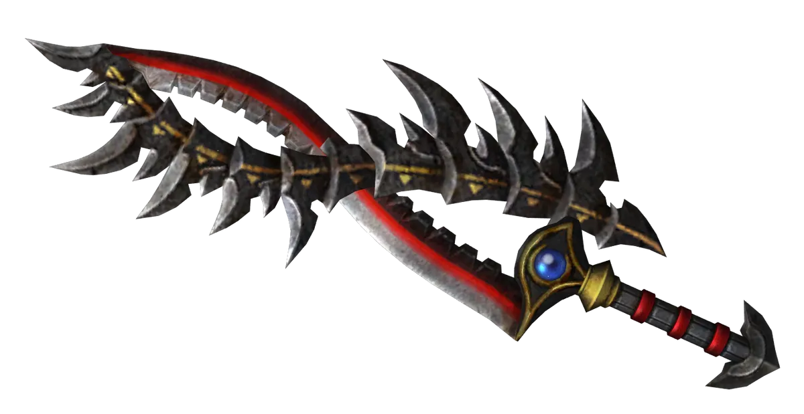

Appréciation du jeu
The Legend of Zelda: Breath of the Wild
Critiques
Lors de sa sortie, le jeu est encensé par la critique. Malgré quelques faiblesses techniques et des visuels en deçà de ceux des jeux des consoles concurrentes, il est ovationné pour sa direction artistique, la démesure de son monde ouvert et de son contenu, la qualité des musiques et l'ingéniosité des énigmes. Le jeu reçoit différentes récompenses en 2016 et 2017, dont le prix du jeu de l'année aux Game Awards 2017. Au 30 juin 2021, il s'est écoulé à 24,89 millions d'exemplaires, dont 23,20 millions sur Nintendo Switch et 1,69 million sur Wii U, ce qui fait de lui le jeu le plus vendu de la franchise. Une suite intitulée The Legend of Zelda: Tears of the Kingdom est annoncée pendant l'E3 2019 et prévue pour mai 2023.

Page 6/7